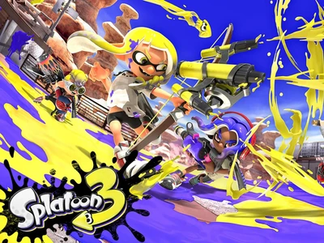

Bigger and Better!
At the end of Splatoon 2's final Splatfest, plans for a third game were not yet considered. However, it was eventually confirmed via teaser trailer on February 17, 2021. It was then released worldwide on September 9, 2022. Compared to the first and second games, the third has a very different tone overall. Similar to what was done with Splatoon 2, Splatoon 3's story was chosen by the outcome of the final Splatfest. And here, the environment and vibe of the game is based all around chaos.
Since the game is still fairly new, the developers are still working to add in new content to the game. In fact, two new waves of DLC were annouced earlier this year, which includes a entirely new single player story. Right now, Splatoon 3 has sold 10.7 million copies worldwide, making it the fastest selling game in the franchise. This also makes it one of the best-selling Switch games next to Splatoon 2.